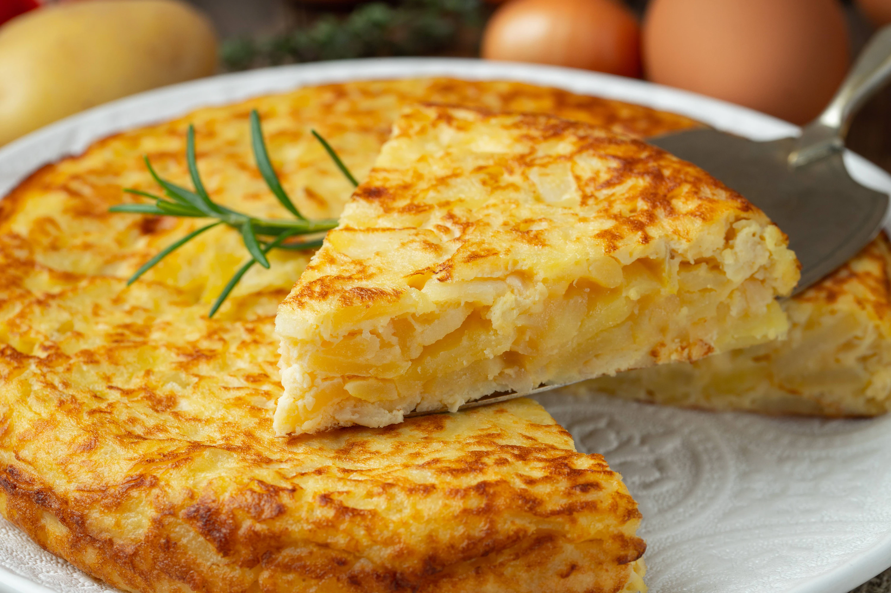

Tortilla de Papa

Ingredientes para una tortilla española mediana:
- 4 Huevos
- Aceite
- Sal
- 1/2 cebolla
- 3 papas
En Argentina llamamos tortilla española a la tortilla con cebolla y chorizo colorado, sin embargo la tortilla española original es la que lleva cebolla, huevo y papas. La versatilidad de esta receta nos permite preparar la tortilla de papas de la forma más adecuada para nosotros y con los ingredientes que más nos gusten: podemos agregar cebolla de verdeo, salchicha vegana, incluso ser creativos y animarnos a inventar algun ingrediente nuevo!
Paso a Paso de la receta original:
- Cortar las papas en rodajas finas, estilo papas españolas. Deben ser de tamaño mediano, ya que queremos que queden bien unidas con el huevo. Les recomiendo que vean cómo corto las papas en el video para que se den cuenta aproximadamente del tamaño que deben tener.
- Colocar abundante aceite en una sartén. Es importante saber que las papas -en la receta tradicional y auténtica de la tortilla española- no deben freírse sino que deben pocharse. Lo que vamos a hacer es poner la sartén a fuego fuerte, y en cuanto esté tibio el aceite vamos a agregar todas las papas. Si, ese es el primer truco: agregamos las papas antes de que el aceite esté hirviendo. Las dejamos cocinar durante 5 minutos.
- Mientras tanto vamos a cortar la cebolla en julianas. Una vez pasados los 5 minutos agregamos las cebollas a la sartén con las papas, revolviendo suavemente.
- Luego de revolver bien para que esté todo integrado en la sartén, agregamos un poco de sal y vamos a bajar el fuego al mínimo y vamos a tapar la sartén. Pero la vamos a tapar sin que quede totalmente cerrada, dejando una mínima abertura para que pueda salir el vapor. Así la dejamos durante 15-20 minutos mientras de vez en cuando vamos revolviendo suave y procurando que no se pegue.
- Una vez que las papas estén cocidas (no deben estar crocantes, simplemente tiernas como se ve en el video), vamos a proceder a colarlas, dejándolas en un colador hasta que baje todo el aceite. Si quieren, pueden guardar éste aceite para utilizar un poquito al cocer la tortilla española.
- Colocar los 4 huevos en un bol con un poco de sal y batirlos bien durante unos minutos.
- Agregar las papas con cebollas al bol y volver a batir bien hasta que esté todo integrado y unido.
- Agregamos un chorro de aceite (pueden utilizar el que reservamos) en una sartén dependiendo del estilo de tortilla que queremos. Si queremos una tortilla de papas alta utilizaremos una sartén más pequeña, si utilizamos una sartén grande vamos a tener una tortilla finita. Colocamos la sartén a fuego fuerte.
- Cuando esté bien caliente el aceite, agregamos la mezcla que tenemos en el bol y movemos la sartén agitándola durante 30 segundos. No tengan miedo al mover la sartén, lo que estamos haciendo es cuajar los huevos para que la tortilla española quede a la perfección.
- Luego de los 30 segundos vamos a poner el fuego bajo y con una espátula vamos a ir corrigiendo los bordes mientras se va cociendo. Vamos a cocinar la tortilla española así durante 5 minutos. El tiempo de cocción depende exclusivamente de la forma en la que a uno le gusta, a mi no me gusta ni muy cocida ni muy babé sino un intermedio, y para eso utilizo una cocción de 5 minutos por lado. Pueden variarlo según sus gustos.
- Luego vamos a darla vuelta. Para ésto vamos a colocar un plato encima de la sarten y la damos vuelta sin miedo. Pueden ver cómo lo hago en el video, es muy fácil! Una vez que la damos vuelta vamos a emprolijar los bordes nuevamente con la espátula y dejamos cocer unos 3-4 minutos más.
- Para sacarla vamos a volver a darla vuelta. Es decir, colocamos nuevamente el plato encima de la sartén como hicimos en el punto anterior y lo damos vuelta con cuidado. Buen provecho!